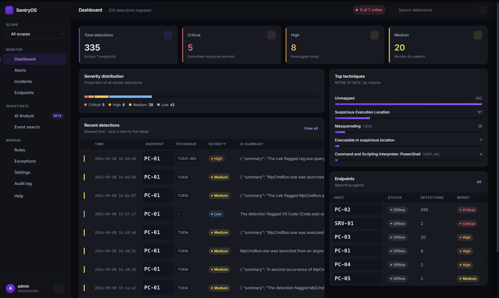

Feature tour
The console, in the order you'd actually use it
Dashboard
A glanceable overview: severity counts, top techniques, and a real agent-health
indicator that polls actual check-ins rather than showing a hardcoded "online" badge.

dashboard-sanitized.png
Alerts, with real process lineage
Click into any detection and see the actual parent → child process chain pulled
from Sysmon telemetry, not a description of it. Bulk actions let you resolve, tag a
verdict, or leave a note across several alerts at once.
alert-drawer-sanitized.png
alert-list-sanitized.png
The alert detail drawer open, process lineage section visible with a real accessing_process → target_process chain.
Incidents
Related alerts on the same host, close together in time, get correlated into one
incident instead of showing up as five disconnected rows — a small step toward
telling a story instead of a list.
A rules engine anyone can use
Detection logic lives in the database, not in code — write a new rule from the
console and it takes effect on the very next event. Rules can be scoped, so one
person's custom detection only ever fires on their own machines.
rules-scope-sanitized.png
Rules page in the "All scopes" admin view, showing the Scope, Created by, and Created columns together.
Real account boundaries
Every user is scoped to their own set of endpoints, enforced on the server, not
just hidden in the UI. A member can write their own rules and never sees — or
affects — anyone else's machines.
multi-tenant-demo-sanitized.gif
Log in as a member account, show the scope indicator, show Settings is hidden, then log in as admin and switch scopes.
The agent itself
Runs as an actual Windows Service — SYSTEM-level, starts at boot, no logged-in
user required. It reads native Windows auditing for process creation, and Sysmon
for network connections, cross-process memory access, and file writes.
agent-terminal-sanitized.png
agent.exe running in debug mode, terminal output showing a real Sysmon event caught and forwarded to the backend.
An installer that does the boring parts for you
One double-click: prompts for a license key, silently turns on the Windows
auditing settings the agent needs, installs Sysmon with a scoped config, and
registers the agent as a service — no PowerShell, no manual steps.
installer-wizard-sanitized.png
The Inno Setup wizard's license-key entry page.